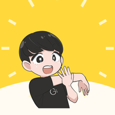

🧪 実験室
LAB
#
きょうのオガトレの あたらしい機能のためし場
LAB
ここは実験室です🧪 ためしに作った画面のあつまりで 本番のアプリとは別ものです
ここでの記録は
本番と共有しません
（この画面から本番の記録に書きこむこともありません）
🖼️
じまんカードをつくる
つづけてる日数と すきな1本を 1枚のカードに✨ そのままシェアできます
📋
かたさチェック７問版
いつもの4問に 首・ひねり・バランスをプラス！結果の「きょうの1本」が変わるかも
💌
せんぱいの声ギャラリー
まえを歩くせんぱいたちの ほんとうの声を カードでめくれます🌱
アプリ本体にもどる
LAB
これは実験室のデモです🧪 記録データは本番と共有しません（本番の記録は
読むだけ
で 書きこみません）カード画像はこの端末の中だけで作られます
🖼️ じまんカードをつくる
つづけてる日数と すきな1本を 1枚に✨
できたカードは共有ボタンからシェアできます
つづいている日数
すきな1本をさがす🎬
えらんだ1本
まだえらんでいません 上の検索からどうぞ
カードをつくる🧪
← 実験メニューにもどる
じまんカード（実験室版）
カードをつくってます…
保存・シェアする
とじる
LAB
これは実験室のデモです🧪 結果はどこにも保存せず 本番のチェック結果にも影響しません
📋 かたさチェック７問版
いつもの前屈・あぐら・肩まわり・足首に
首・ひねり・バランス
の3問をプラス！
いちばん硬いところで「きょうの1本」の出し分けが変わります
タップするだけ 約６０秒✅ 無理はしないでね
はじめる
← ひとつまえにもどる
きょうの1本はこれ！
もういちどチェックする
← 実験メニューにもどる
LAB
これは実験室のデモです🧪 記録データは本番と共有しません
💌 せんぱいの声ギャラリー
まえを歩くせんぱいたちの ほんとうの声です🌱
カードをタップするとめくれます
※YouTubeコメントの原文のまま（お名前は出ません）
← 実験メニューにもどる